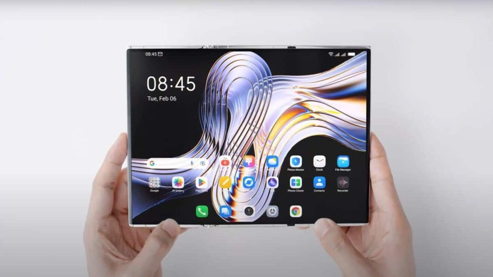

Namun, Oppo belum mengungkapkan secara rinci spesifikasi perangkat kerasnya. Render ini juga membantah rumor yang menyebut Oppo akan menarik diri dari pasar smartphone lipat. Oppo dengan tegas menyatakan komitmennya untuk terus mengembangkan perangkat lipat baru
Selain Oppo, beberapa produsen lain seperti Huawei, Xiaomi, dan Tecno juga sedang mengembangkan smartphone dengan desain tri-fold. Sampai saat ini, belum ada produsen yang secara resmi meluncurkan perangkat tri-fold ini. Namun, kemungkinan besar Huawei akan menjadi yang pertama setelah CEO mereka, Richard Yu, terlihat memegang smartphone tri-fold buatan perusahaan
Dengan munculnya konsep tri-fold dari beberapa merek, persaingan di pasar smartphone lipat tampaknya akan semakin menarik. Tentu saja, banyak dari kita yang sudah menantikan kapan perangkat-perangkat ini akan resmi diluncurkan. Kalian juga penasaran, kan